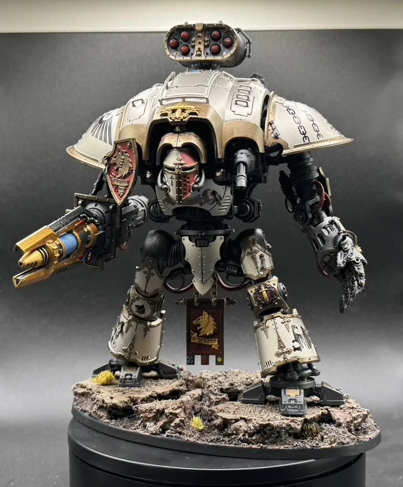

A shared hobby.
Miniforgedad is our place for miniature painting, building, and the things we learn along the way.
Read our story →We’re a dad and son building and painting Warhammer miniatures, learning as we go. Here’s a simple way to find your way around.
Miniforgedad is our place for miniature painting, building, and the things we learn along the way.
Read our story →
Browse the miniatures and workbench photos, with painter credits and links to the original posts where available.
Explore the gallery →Start with thinning, drybrushing, shading, and basing. The tutorial library credits the hobby creators behind each lesson.
Choose a beginner tutorial →Find the original posts on Instagram and videos on YouTube. No weekly progress tracker to keep up with—just the hobby.